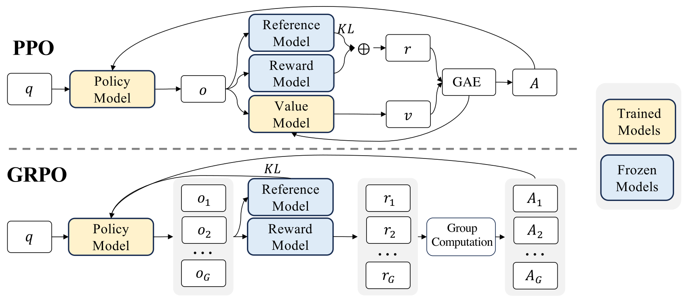

GRPO 精讲：用同题多次尝试估计优势¶
GRPO 对同一个问题采样多个回答，用组内奖励比较替代学习出来的价值基线，再以带裁剪的策略梯度提高较好回答的生成倾向。
原始出处是 DeepSeekMath，后在 DeepSeek-R1 中广为使用；GRPO 不是一篇独立命名的 DeepSeek 原始论文。
语言模型的在线强化学习需要回答“这一次生成，比通常水平好多少”。PPO 常训练价值模型提供基线，增加显存、计算和估计误差。GRPO 让同一道题的多个回答相互比较，以组均值和标准差构造优势，取消单独的 critic。这个设计适合能够多次采样、并用奖励区分质量的任务，但成本转移到了生成与评判上。它可以使用人类偏好训练的奖励模型，也可以使用数学答案、代码测试等可验证奖励；后者通常称 RLVR。理解组内比较、token 级更新和奖励口径，比把 GRPO 简化成“无 critic 的 PPO”更有实际价值。
先把四类模型角色分清¶
| 角色 | 符号 | 作用与更新方式 |
|---|---|---|
| 当前策略 | \(\pi_\theta\) | 正在训练、需要反向传播的语言模型 |
| 旧策略／行为策略 | \(\pi_{\mathrm{old}}\) | 产生当前批次回答的策略快照，用于重要性比率；收集新批次时更新 |
| 参考策略 | \(\pi_{\mathrm{ref}}\) | KL 约束的行为锚点，通常在一个训练阶段内冻结 |
| 奖励来源 | \(r\) | 规则、执行器或奖励模型；可以是模型，也可以完全没有神经网络 |
GRPO 省去的是价值模型，并不是必然省去奖励模型。DeepSeekMath 的原始实验确实训练奖励模型；R1 的推理训练大量使用规则奖励。原论文的 iterative RL 还会在外层迭代更新奖励模型和参考策略，不能据此把参考模型误当成每一步的旧策略。

图中组内多次采样提供了基线，因而不再为每个 token 额外训练一个 value 预测器。省下的训练资源有意义，但一组长回答的生成成本仍然可能是主要开销。
从 REINFORCE 到组内优势¶
对于一条回答 \(o\)，基本策略梯度为
减去不依赖当前动作的基线，在适当条件下不改变期望梯度，却可以降低方差。PPO 的 critic 学习状态价值；GRPO 对同题 \(q\) 采样 \(G\) 条回答 \(o_1,\ldots,o_G\)，原始 outcome-supervision 形式为
同一回答的有效 token 共用 \(A_i\)。\(\epsilon_{\mathrm{num}}\) 是实现中防止除零的数值常量，与后面的 PPO clip 参数不是同一个量。组内均值包含样本自身，组内标准差又依赖采样结果，因此不能把实际 GRPO 估计量无条件宣称为“原始无偏 REINFORCE 梯度”。后续关于偏置的研究正是在分析这些变化。
若一组奖励为 \([1,1,0,0]\)，使用总体标准差时均值为 0.5、标准差为 0.5，优势约为 \([1,1,-1,-1]\)。若为 \([1,0,0,0]\)，唯一正确回答的优势约 1.732，其余各约 −0.577。同样是二元奖励，题目在当前策略下的成功率不同，就会产生不同的权重。
若全对或全错，减均值后的优势均为 0，任务奖励不提供学习信号；有 KL 项时仍可能发生 KL 更新。因而“奖励全是 0”和“奖励全是 1”都不适合长期占据训练批次。动态筛选可以提高有效样本比例，但也会改变训练问题分布，需要监控覆盖范围。
token 级重要性比率与裁剪¶
定义 token 级比率
原始 GRPO 的最大化目标可写为
正优势时，目标不再奖励把比率推到 \(1+\varepsilon\) 之外；负优势时，不再奖励将其压到 \(1-\varepsilon\) 之下。裁剪限制的是这个 surrogate 的激励，不是把模型概率或参数变化硬性锁在一个区间。
旧 log-prob 要按生成该批样本的行为策略保存。对同一批样本做多个更新时，分母保持该快照值；不能每更新一步就以当前模型重算分母冒充旧策略。训练与生成引擎的精度、权重同步和采样实现也会带来偏移，因此现代实现常额外讨论 off-policy correction。
即使只更新一次、起始 \(\rho=1\)，分子仍然有梯度，学习并未消失。错误地把分子和分母都 detach，才会把策略梯度切断。
KL 项到底在比较什么¶
令 \(d_{i,t}=\log\pi_{\mathrm{ref}}-\log\pi_\theta\)，原文采用
当 token 按当前策略采样且支持条件满足时，其期望等于 \(D_{\mathrm{KL}}(\pi_\theta\Vert\pi_{\mathrm{ref}})\)。训练中复用旧策略样本会涉及 off-policy 近似；应区分“估计量在指定采样分布下的性质”和“所有训练实现都无偏”。KL 系数 \(\beta\) 控制行为锚定强度，不等于 clip 参数 \(\varepsilon\)。
原始 DeepSeekMath 把 KL 直接放进目标，不把它混入组内标准化奖励。后续一些 RLVR 配方令 \(\beta=0\)，不再维护参考模型，可能获得更自由的优化，但也失去了这项显式约束。当前 TRL 文档 展示了这些变化；阅读代码时必须看具体配置，不能仅凭类名 GRPOTrainer 判断其目标等于 2024 年原式。
outcome reward 与 process reward¶
结果奖励给整条回答一个分数，再把优势广播到所有 token。它简单，也容易获得自动监督，但不能明确区分哪个推理步骤真正导致成功：答案猜对、过程错误的轨迹也可能被奖励。
过程奖励在步骤结尾评分。DeepSeekMath 将过程分数进行组内标准化，token 的优势取它之后各步骤标准化奖励之和：
这增加了时间上的监督结构，同时依赖可靠的过程评判器和步骤切分。格式奖励、最终正确性、过程分数不宜随意相加；它们的尺度与可被利用方式不同。例如只要“看起来有推理步骤”就得分，会鼓励无效冗长输出。
一轮训练实际做什么¶
- 从题目池抽取问题，每题由旧策略采样 \(G\) 个回答，保存生成 token、mask 和旧 log-prob。
- 奖励函数读取回答及必要的题目信息，返回可比较的分数；规则执行失败和答案解析失败要有明确语义。
- 按题目分组，计算优势并停止对奖励与优势求梯度。分组不能误跨不同题目或不同分布式 worker 的索引。
- 当前策略前向得到新 log-prob；有 KL 时再得到冻结参考模型 log-prob。应用裁剪、KL 和规定的归一化方式。
- 反向传播并更新；按配方决定同一批样本是否复用、何时同步生成模型、何时重新采样。
这描述的是基本数据流。DeepSeekMath 主实验每次探索后只更新一次，而它给出的外层迭代算法还会更新奖励模型并混入历史数据；不同层次的“iteration”不应混在一起。
一个可计算的小例子与 PyTorch 核心¶
以下只展示 outcome reward、原始“每回答平均”目标和可选 KL 的损失核心。输入 log-prob、mask 为 [B, G, T]，reward 为 [B, G]；生产训练还需要可靠的生成、分布式分组、模型同步和奖励执行。
import torch
def grpo_loss(logp, old_logp, rewards, completion_mask,
ref_logp=None, beta=0.0, clip_eps=0.2):
mask = completion_mask.to(logp.dtype)
with torch.no_grad():
centered = rewards - rewards.mean(dim=1, keepdim=True)
std = rewards.std(dim=1, keepdim=True, correction=0)
advantage = centered / (std + 1e-8)
ratio = torch.exp(logp - old_logp.detach())
unclipped = ratio * advantage.unsqueeze(-1)
clipped = ratio.clamp(1 - clip_eps, 1 + clip_eps)
token_loss = -torch.minimum(
unclipped, clipped * advantage.unsqueeze(-1))
if beta:
if ref_logp is None:
raise ValueError("ref_logp is required when beta is nonzero")
delta = ref_logp.detach() - logp
kl = torch.expm1(delta) - delta
token_loss = token_loss + beta * kl
lengths = mask.sum(dim=-1).clamp_min(1)
return ((token_loss * mask).sum(dim=-1) / lengths).mean()
这里明确使用总体标准差；若实现采用样本标准差，优势会有一个依赖 \(G\) 的缩放差异。expm1 提高接近零时的数值精度，但不能解决任意大的 log-ratio；出现溢出时要排查策略漂移与数值问题。真实批次不应含没有任何有效回答 token 的样本，代码中的 clamp_min 只是避免除零。
长度与难度偏置：为什么后续方法要改原式¶
每回答除以长度让每条回答拥有近似相等的总权重，较长回答中每个 token 的权重更小；它与“所有有效 token 等权”不是同一个目标。对正负优势和不同长度的组合，可能出现不希望的长度激励。
再除以组内标准差会按当前题目的成功率等因素重加权。二元奖励下，方差近似 \(p(1-p)\)；不同难度问题的信号尺度因此变化。它不只是让数值好看，也改变优化贡献。
Dr. GRPO 针对长度与难度偏置讨论去除 reward 标准差归一化，并使用与单条回答长度无关的常量分母。DAPO 则结合 token 级损失聚合、非对称裁剪、动态采样和过长回答处理。这些是后续独立研究，不能全部归功于 DeepSeek，也不能把它们的目标直接称为原始 GRPO。
| 配方要点 | 原始 GRPO | 后续常见选择 |
|---|---|---|
| 奖励缩放 | 同题均值与标准差 | 仅减均值，或其他 batch 缩放 |
| token 聚合 | 每回答除以自身长度，再平均 | 全 batch 有效 token 平均，或固定长度常量 |
| KL | 原式显式包含 | 某些 RLVR 配方关闭 |
| 裁剪 | 对称区间 | 可设置不同上下界 |
| 无组内方差 | 奖励项梯度为零 | 动态筛选或改变题目采样 |
复现实验应同时记录这些项、生成温度、样本数、最大生成长度与截断处理。只说“用了 GRPO”不足以复现。
奖励设计决定了模型会利用什么¶
数学题应区分答案提取成功与数学等价；只用字符串相等会错罚等价答案，也可能奖励格式投机。代码题要在隔离、资源受限的执行环境中评测，避免测试被改写、无限循环或答案泄漏。过程评判器则要检查是否把自信语气、长度和模板当成正确性。
“格式奖励 + 正确性奖励”不是保证正确的配方。若格式项轻易取得、权重又高，模型可能只优化格式；若正确率几乎为零，又缺少有效探索，组内比较没有可用方向。通常需要先保证基座具备一定成功概率，再通过题目难度分布和训练信号逐步改进。
怎么理解原始证据与 R1 的扩展¶
DeepSeekMath 在 DeepSeekMath-Instruct 7B 上训练，使用约 144k 道 GSM8K／MATH 相关问题，每题 64 个候选、最大回答长 1024，策略学习率 \(10^{-6}\)、KL 系数 0.04。论文报告 GSM8K 从 82.9% 到 88.2%，MATH 从 46.8% 到 51.7%，并观察到部分域外收益。这是数学专域、特定基座与奖励设置下的结果。
R1-Zero 进一步探索不经前置 SFT 的大规模推理 RL，展示反思与更长推理等行为；R1 再加入冷启动、拒绝采样与更多阶段来处理可读性及通用能力。不能把 R1 的全部提升归因于 GRPO 的一个公式，也不能把“没有前置 SFT”误解为“没有预训练知识或数据”。
对于训练监控，奖励均值之外，应观察组内标准差为零的比例、有效题目覆盖、回答长度与截断率、clip fraction、策略 KL、独立任务正确率，以及固定生成预算下的 pass@1／pass@k。奖励上升而独立评测不升，通常意味着奖励定义、数据泄漏或分布变化需要检查。
DPO 与 GRPO 如何衔接¶
DPO 通过离线回答对拟合相对偏好；GRPO 通过在线同题采样探索并更新。前者容易启动、计算可控，后者可以反复产生新轨迹，但需要奖励、探索和生成基础设施。将二者放在 RLHF 章节，是按后训练技术组织；数学和代码的规则奖励训练应明确标为 RLVR，避免把奖励来源与优化算法混为一谈。
进一步阅读：DeepSeekMath 论文、DeepSeek-R1 论文、TRL GRPOTrainer、Nathan Lambert 的 RLHF Book：Policy Gradients、Dr. GRPO、DAPO。